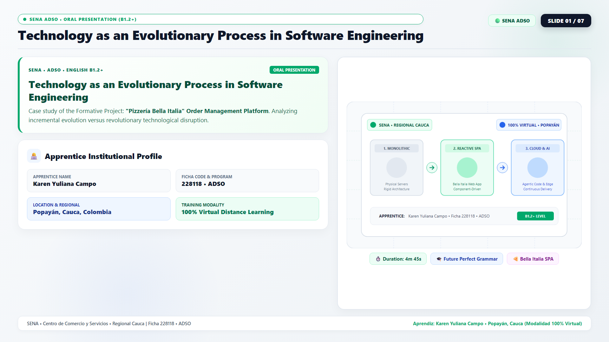

SENA ADSO
GA6-240202501-AA1-EV02 • Video Presentación Oral en Inglés
Aprendiz: Karen Yuliana Campo • Popayán, Cauca (100% Virtual) • Ficha 228118
✨
DesignCraft Deck
🎨
FigCraft Deck
⏱️ 00:00
▶ Iniciar
↺
📹 Cámara
📋 Guion
⛶ Pantalla Completa
⌨️
❮

❯
Diapositiva 1 de 7
🔴 Webcam Live
✕
Atajos de Teclado
✕
Siguiente Diapositiva
→
o
Espacio
Diapositiva Anterior
←
Pantalla Completa
F11
o
F
Mostrar/Ocultar Guion
T
Activar/Desactivar Cámara
C
Iniciar / Pausar Cronómetro
P
Ir a Diapositiva Directa
1
-
7